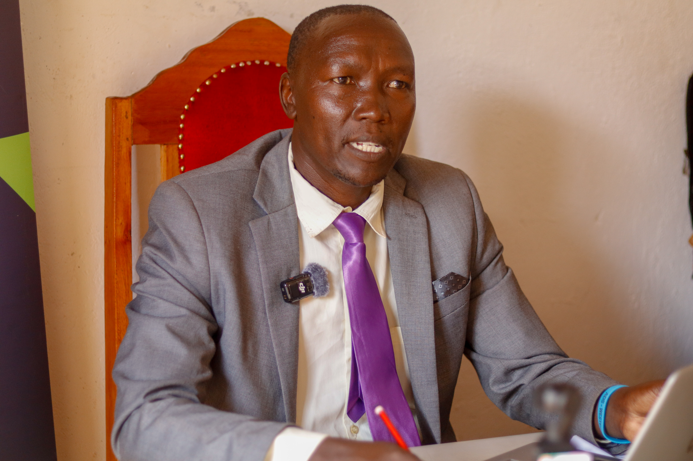
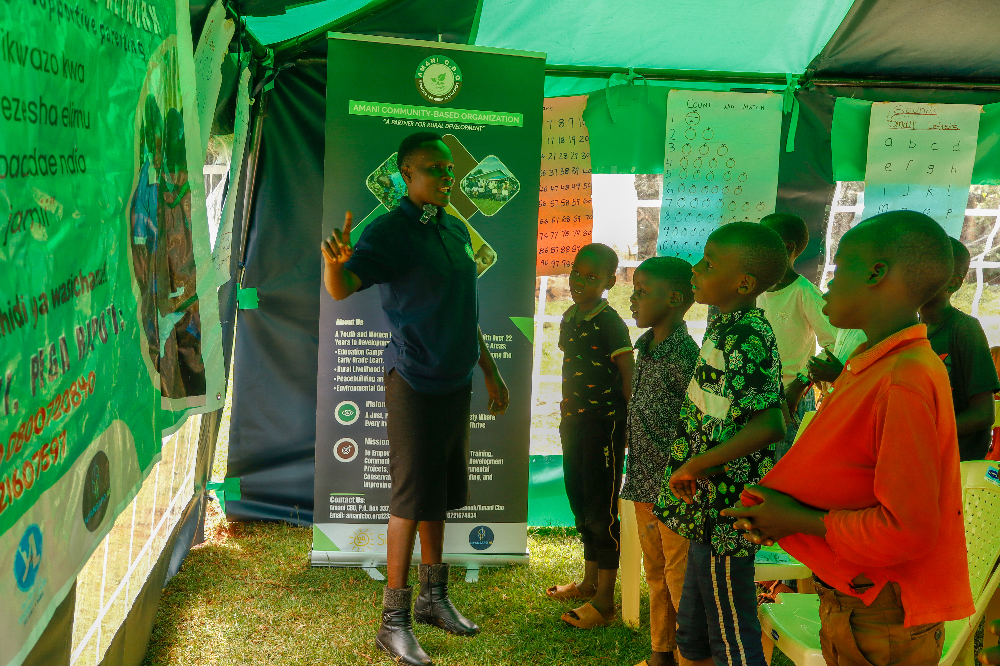
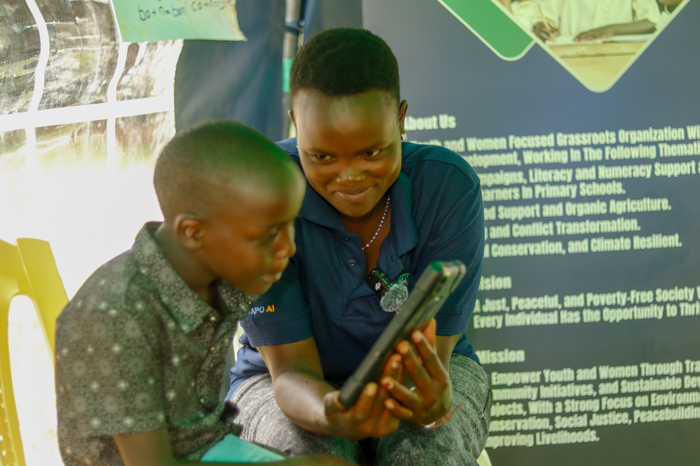

Organizational Background
Amani Community-Based Organization (CBO) is a youth-driven initiative that was established in 2002 and officially registered with the Department of Gender and Social Development Services in the Mt. Elgon District of Western Kenya. Based in Chongeywo, Kopsiro Division (now part of Cheptais District), Amani CBO serves as a platform for addressing critical community challenges such as income generation, HIV/AIDS awareness, peacebuilding, and conflict management.
The organization brings together 150 members, including individuals and over 13 self-help groups from the Kopsiro region. Amani CBO was founded with the mission to empower youth, foster sustainable development, and address pressing community concerns, particularly in conflict resolution, HIV/AIDS prevention, and environmental conservation.
Since its inception, Amani CBO has successfully implemented a range of community-based interventions aimed at improving health, promoting environmental sustainability, enhancing livelihoods, and fostering peace. Our reach extends beyond the local community, with some projects also having a national impact.
Our Vision
A just, peaceful, and poverty-free society where every individual has the opportunity to thrive.
Our Mission
To empower youth and women through training, community initiatives, and sustainable development projects, with a strong focus on environmental conservation, social justice, peacebuilding, and improving livelihoods.
Core Values
🌍 Where we work
We exist to transform the lives of rural farmers, women, youth, and other vulnerable members of the community. We currently operate in Bungoma County; however, in the last two years, we have implemented our activities at the national level i.e., Busia, Trans-Zoia, Uasin-Gishu, Kisumu, Homa Bay, Nyahururu, Machakos, Taita Taveta, Mombasa, Kilifi, and Malindi.
Our journey of impact
Meet the Team

Mr. Alex Kiptorus
Director & Founder

Madam Esther Wafula
Assessment & Learning

Madam Racheal Bera
Nyansapo AI Literacy
Membership & leadership
Amani CBO operates under a well-defined governance structure that includes an executive board, management committees, and a dedicated secretariat. The organization is guided by a constitution and bylaws to ensure transparent operations and accountability. The secretariat is staffed by three dedicated volunteers, supported by a functional office equipped with necessary ICT resources.
Contact person
Mr. Alex Kiptorus, Project Coordinator & Founder
📞 +254 721 607 597 / +254 721 674 834 · ✉️ kiptorus.alex@gmail.com
📍 Headquarters: Sabaot Bible Translation and Literacy Centre (SBTL), Kopsiro-Chepyuk Road, opposite the District Officer's offices, Kopsiro Division. P.O. Box 337, Chwele-50202.
📧 amanicbokops@yahoo.com · Facebook: Amani CBO